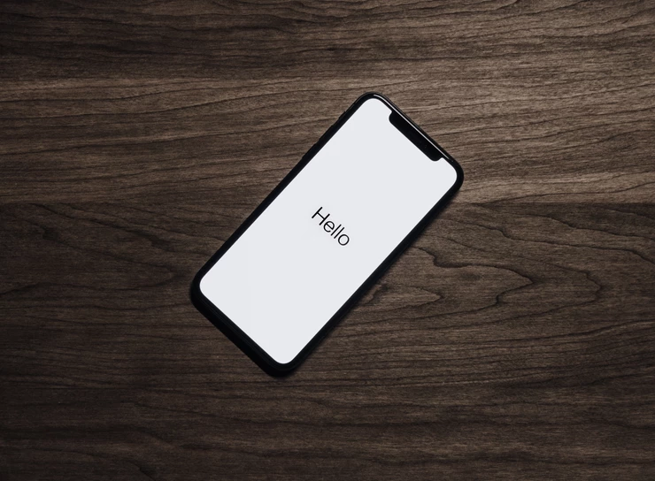

Vanaf 26 juni mag alles waar 1,5 meter afstand kan worden gehouden. Evenementen en discotheken kunnen een onbeperkt aantal mensen toelaten die gevaccineerd zijn of die net een negatieve test hebben ondergaan.
Knaagdieren kunnen morgen weer naar Frankrijk en België gaan. Dat land zal veilig zijn. In Beverwijk werken we niet met groen, geel, oranje en rood maar met zeer veilig, veilig, onveilig en zeer onveilig.
Vanaf 1 Juli mogen bedrijven alleen bellen als je klant bent of als je daar vooraf toestemming voor hebt gegeven. Zo kan restaurant hout pas bellen als ik me heb geregistreerd in hun systeem of als ik daar vooraf toestemming voor heb gegeven. Ze mogen mij nu niet willekeurig een appje sturen of me zomaar bellen of ik wat wil eten. Als ik voor een een petitie teken mogen ze me nu pas bellen als ik daar vooraf toestemming voor heb gegeven.